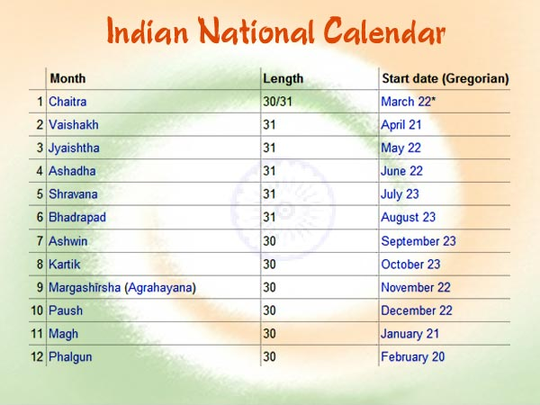

 The national calendar based on the Saka Era, with Chaitra as its first month and a normal year of 365 days was adopted from 22 March 1957 along with the Gregorian calendar for the following official purposes: Gazette of India. News broadcast by All India Radio. Calendars issued by the Government of India. Government communications addressed to the members of the public. Dates of the national calendar have a permanent correspondence with dates of the Gregorian calendar, 1 Chaitra falling on 22 March normally and on 21 March in leap year.